元素¶
在配置文件中启用此模组将为游戏添加多个新元素，或重新启用被禁用的原版元素。
其中部分元素还将被添加到星图的 POI 中用于采矿，或在世界生成时随机生成。
新元素类别¶
| 材料 | 元素 | |
|---|---|---|
| 硬化合金 |
硬化合金是两种或多种材料的熔合产物。 其高强度特性使其可作为钢的替代材料使用。 |
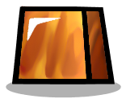 磷青铜 钴铁合金 钴铁合金 塑晶钢 塑晶钢 Neutronium Alloy Neutronium Alloy |
| 载气 |
载气是一类用于等离子体相关工艺的惰性或半惰性气体。 |  氦气 氦气 氢气 氢气 氮气 氮气 |
| 金属砂 |
由不同数量的金属颗粒组成的砂质材料 |  中级金属砂 中级金属砂 低级金属砂 低级金属砂 高级金属砂 高级金属砂 |
新 元素¶
中级金属砂¶
一种由大量常见金属颗粒构成的厚重沙质物质，其中还混有其他更细小的矿物质颗粒。
| 材料属性 | ||
|---|---|---|
|
资源种类：精炼矿物 熔点：2249°C 58 %  气态岩, 气态岩,42 %  熔渣 熔渣硬度：32 属性： 一般建造材料, 不可粉碎物, 不稳定, 固体, 矿石, 金属砂 |
比热容： 8.660 (DTU/g)/ ºC 热导率： 12.320 (DTU/(m*s))/ ºC 辐射吸收因数：0.46 辐射释放量/1000 千克： 0 拉德/周期 |
低级金属砂¶
一种砂质材料，主要由低质量的金属颗粒组成，混有其他较细的矿物颗粒。
| 材料属性 | ||
|---|---|---|
|
资源种类：精炼矿物 熔点：2249°C 58 % 气态岩,42 % 熔渣硬度：32 属性： 一般建造材料, 不可粉碎物, 不稳定, 固体, 矿石, 金属砂 |
比热容： 8.660 (DTU/g)/ ºC 热导率： 12.320 (DTU/(m*s))/ ºC 辐射吸收因数：0.46 辐射释放量/1000 千克： 0 拉德/周期 |
原料(天然)气¶
由气态碳氢化合物和其他杂质组成的化石气体。大部分气体由甲烷、丙烷和酸性气体。
| 材料属性 | ||
|---|---|---|
 |
资源种类：不可呼吸的气体 凝点：-184.5°C 67 % 液态甲烷, 33 %  硫 硫属性： 气体 |
比热容： 2.760 (DTU/g)/ ºC 热导率： 0.057 (DTU/(m*s))/ ºC 辐射吸收因数：0.3 辐射释放量/1000 千克： 0 拉德/周期 |
固态氨¶
（NH3）氨是一种由氮和氢组成的无机化合物（固态）
| 材料属性 | ||
|---|---|---|
 |
资源种类：可液化物 熔点：-77.73°C ->  液态氨 液态氨硬度：2 属性： 固体 |
比热容： 4.744 (DTU/g)/ ºC 热导率： 0.507 (DTU/(m*s))/ ºC 辐射吸收因数：0.5 辐射释放量/1000 千克： 0 拉德/周期 |
固态氮¶
（N2）氮是一种非金属元素，是元素周期表第 15 族中最轻的成员。（固态）
| 材料属性 | ||
|---|---|---|
| 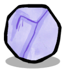 | 资源种类：可液化物 熔点：-209.7°C ->  液态氮 液态氮硬度：2 属性： 固体 |
比热容： 1.040 (DTU/g)/ ºC 热导率： 1.000 (DTU/(m*s))/ ºC 辐射吸收因数：0.5 辐射释放量/1000 千克： 0 拉德/周期 |
塑晶钢¶
这是一种由塑料加固纤维构成的材料，其结构类似于钢晶体。这种材料比常规金属合金更坚固、更轻便，而且热导率极低。
| 材料属性 | ||
|---|---|---|
|
资源种类：人造材料 熔点：2576.85°C 3 %  二氧化碳, 二氧化碳,97 %  熔融钢 熔融钢硬度：70 属性： 一般建造材料, 不可粉碎物, 固体, 硬化合金, 精炼金属, 金属矿石 |
比热容： 0.210 (DTU/g)/ ºC 热导率： 6.000 (DTU/(m*s))/ ºC 辐射吸收因数：0.9 辐射释放量/1000 千克： 0 拉德/周期 |
复合碳纤维¶
碳纤维增强聚合物块体极其坚固且轻盈,是由碳纤维构成的纤维增强塑料。这种材料适用于需要高强度与轻量化、高刚度(硬度)的场合,比如航空航天领域。其由碳的不同同素异形体构成,使其具有极强的耐热性。
| 材料属性 | ||
|---|---|---|
 |
资源种类：人造材料 熔点：4726.85°C ->  熔融碳 熔融碳硬度：250 属性： 不可粉碎物, 可做水管的物质, 固体, 矿物原料, 精炼金属, 金属矿石, 隔热体 |
比热容： 0.239 (DTU/g)/ ºC 热导率： 0.000 (DTU/(m*s))/ ºC 辐射吸收因数：1 辐射释放量/1000 千克： 0 拉德/周期 |
异丙烷¶
(C(CH4)2) 异丙烷是一种石油化工制冷剂气体，适用于多种用途。在较高温度下会分解为丙烷。
| 材料属性 | ||
|---|---|---|
 |
资源种类：不可呼吸的气体 熔点：90°C 99 %  丙烷, 丙烷,1 %  富勒烯 富勒烯硬度：0 属性： 气体 |
比热容： 9.760 (DTU/g)/ ºC 热导率： 12.720 (DTU/(m*s))/ ºC 辐射吸收因数：0.3 辐射释放量/1000 千克： 0 拉德/周期 |
方铅矿¶
方铅矿是硫化铅（PbS）的天然矿物形式。对于铅来说最重要的矿石，也是银的重要来源。
| 材料属性 | ||
|---|---|---|
| 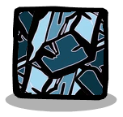 | 资源种类：金属矿石 熔点：1114°C 40 %  熔融铅, 熔融铅,60 %  熔融银 熔融银硬度：25 属性： 一般建造材料, 固体, 矿石 |
比热容： 0.311 (DTU/g)/ ºC 热导率： 3.600 (DTU/(m*s))/ ºC 辐射吸收因数：0.46 辐射释放量/1000 千克： 0 拉德/周期 |
有毒气体¶
一种沉重且气味难闻的气体，是工业生产过程中产生的废弃物，由多种不同的化学物质组成。
| 材料属性 | ||
|---|---|---|
 |
资源种类：不可呼吸的气体 凝点：212°C ->  有毒泥浆 有毒泥浆属性： 气体 |
比热容： 2.330 (DTU/g)/ ºC 热导率： 0.822 (DTU/(m*s))/ ºC 辐射吸收因数：0.3 辐射释放量/1000 千克： 0 拉德/周期 |
有毒泥浆¶
一种由工业生产过程中产生的有毒浓稠液体构成的废弃物，其中包含多种不同的化学物质。
| 材料属性 | ||
|---|---|---|
|
资源种类：液体 冰点：15°C ->  有毒粘土 有毒粘土沸点：213°C -> 有毒气体属性： 水基物, 混合物 |
比热容： 0.129 (DTU/g)/ ºC 热导率： 7.000 (DTU/(m*s))/ ºC 辐射吸收因数：0.3 辐射释放量/1000 千克： 0 拉德/周期 |
有毒粘土¶
一种看起来很恶心、质地脆弱的黏土，它是工业生产过程中产生的废弃物，由多种不同的化学物质组成。
| 材料属性 | ||
|---|---|---|
|
资源种类：人造材料 熔点：16°C -> 有毒泥浆硬度：1 属性： 固体 |
比热容： 1.554 (DTU/g)/ ºC 热导率： 11.000 (DTU/(m*s))/ ºC 辐射吸收因数：0.5 辐射释放量/1000 千克： 0 拉德/周期 |
气态硫酸¶
（H2SO4）一种由硫、氧和氢三种元素组成的酸性气体。以气态形式存在时，因其具有极强的腐蚀性，是一种非常危险的化学物质。
| 材料属性 | ||
|---|---|---|
 |
资源种类：不可呼吸的气体 凝点：336°C -> 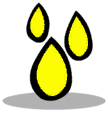 硫酸 属性： 气体 |
比热容： 0.882 (DTU/g)/ ºC 热导率： 0.122 (DTU/(m*s))/ ºC 辐射吸收因数：0.3 辐射释放量/1000 千克： 0 拉德/周期 |
气态银¶
（Ag）一种质地柔软、呈白色光泽的过渡金属（气态）。
| 材料属性 | ||
|---|---|---|
 |
资源种类：不可呼吸的气体 凝点：2161°C -> 熔融银属性： 光源, 抗菌物, 气体, 精炼金属, 金属矿石 |
比热容： 0.223 (DTU/g)/ ºC 热导率： 1.000 (DTU/(m*s))/ ºC 辐射吸收因数：0.3 辐射释放量/1000 千克： 0 拉德/周期 |
气态锌¶
（Zn）锌是一种呈蓝白色光泽的抗磁性金属（气态）。
| 材料属性 | ||
|---|---|---|
 |
资源种类：不可呼吸的气体 凝点：905°C ->  熔融锌 熔融锌属性： 光源, 气体, 精炼金属, 金属矿石 |
比热容： 0.223 (DTU/g)/ ºC 热导率： 1.000 (DTU/(m*s))/ ºC 辐射吸收因数：0.3 辐射释放量/1000 千克： 0 拉德/周期 |
氨气¶
（NH3）氨是氮和氢的无机化合物。氨是一种稳定的二元氢化物，也是最简单的氮氢化物。是一种具有明显刺鼻气味的气体。
| 材料属性 | ||
|---|---|---|
| 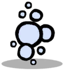 | 资源种类：不可呼吸的气体 凝点：-33.6°C -> 液态氨属性： 气体 |
比热容： 2.175 (DTU/g)/ ºC 热导率： 0.507 (DTU/(m*s))/ ºC 辐射吸收因数：0.3 辐射释放量/1000 千克： 0 拉德/周期 |
氨水¶
（NH4OH）氢氧化铵是由氨和水混合而成的溶液。
| 材料属性 | ||
|---|---|---|
资源种类：液体 冰点：-58°C 11 % 氨气, 89 %  冰 冰沸点：38°C 89 %  水, 水,11 % 氨气 属性： 水基物, 混合物 |
比热容： 4.500 (DTU/g)/ ºC 热导率： 0.600 (DTU/(m*s))/ ºC 辐射吸收因数：0.3 辐射释放量/1000 千克： 0 拉德/周期 |
氮气¶
（N2）氮是一种非金属元素，是元素周期表第 15 族中最轻的成员。
| 材料属性 | ||
|---|---|---|
|
资源种类：不可呼吸的气体 凝点：-195.8°C -> 液态氮属性： 气体, 载气 |
比热容： 1.850 (DTU/g)/ ºC 热导率： 0.175 (DTU/(m*s))/ ºC 辐射吸收因数：0.3 辐射释放量/1000 千克： 0 拉德/周期 |
油页岩¶
油页岩是一种富含有机物的细粒沉积岩，其中含有重质原油、硫化物以及重金属。
| 材料属性 | ||
|---|---|---|
 |
资源种类：消耗性矿石 熔点：120°C 20 %  高硫天然气, 高硫天然气,80 %  原油 原油硬度：2 属性： 固体 |
比热容： 1.760 (DTU/g)/ ºC 热导率： 22.000 (DTU/(m*s))/ ºC 辐射吸收因数：0.7 辐射释放量/1000 千克： 0 拉德/周期 |
液态氨¶
（NH3）氨是一种由氮和氢组成的无机化合物，目前处于低温的液态。
| 材料属性 | ||
|---|---|---|
|
资源种类：液体 冰点：-77.63°C -> 固态氨沸点：-33.34°C -> 氨气 |
比热容： 4.744 (DTU/g)/ ºC 热导率： 0.507 (DTU/(m*s))/ ºC 辐射吸收因数：0.3 辐射释放量/1000 千克： 0 拉德/周期 |
液态氮¶
（N2）氮是一种非金属元素，是元素周期表第 15 族中最轻的成员，目前处于低温的液态。
| 材料属性 | ||
|---|---|---|
|
资源种类：液体 冰点：-209.9°C -> 固态氮 沸点：-195.5°C -> 氮气 |
比热容： 2.000 (DTU/g)/ ºC 热导率： 0.259 (DTU/(m*s))/ ºC 辐射吸收因数：0.3 辐射释放量/1000 千克： 0 拉德/周期 |
混凝土砖¶
混凝土砖块是建筑施工中常用的标准尺寸的长方体块体。这是一种用途广泛的构件，由多种不同的骨料制成，而这些骨料通常被视为废弃物。
| 材料属性 | ||
|---|---|---|
 |
资源种类：人造材料 熔点：1409.85°C ->  岩浆 岩浆硬度：50 属性： 一般建造材料, 固体, 矿物原料, 隔热体 |
比热容： 0.880 (DTU/g)/ ºC 热导率： 0.920 (DTU/(m*s))/ ºC 辐射吸收因数：0.7 辐射释放量/1000 千克： 0 拉德/周期 |
炉渣¶
炉渣是冶炼（火法冶金）矿石和废旧金属的副产品。尽管它属于废弃物，但其用途众多，例如可作为 Concrete Blocks 中的骨料。
| 材料属性 | ||
|---|---|---|
 |
资源种类：精炼矿物 熔点：1400°C -> 熔渣硬度：1 属性： 固体 |
比热容： 1.660 (DTU/g)/ ºC 热导率： 2.200 (DTU/(m*s))/ ºC 辐射吸收因数：0.46 辐射释放量/1000 千克： 0 拉德/周期 |
熔渣¶
熔渣是冶炼（火法冶金）矿石和废旧金属的副产品。这种废料以液态形式存在，需要先冷却至固态（即"炉渣"）状态后才能使用。
| 材料属性 | ||
|---|---|---|
|
资源种类：液体 冰点：1399°C -> 炉渣沸点：2460°C -> 气态岩属性： 光源 |
比热容： 0.850 (DTU/g)/ ºC 热导率： 2.400 (DTU/(m*s))/ ºC 辐射吸收因数：0.8 辐射释放量/1000 千克： 0 拉德/周期 |
熔融银¶
（Ag）银是一种质地柔软、呈白色光泽的过渡金属（熔融态）。
| 材料属性 | ||
|---|---|---|
|
资源种类：液体 冰点：960°C -> 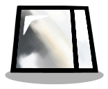 银 沸点：2162°C -> 气态银属性： 光源, 抗菌物, 精炼金属, 金属矿石 |
比热容： 0.129 (DTU/g)/ ºC 热导率： 7.000 (DTU/(m*s))/ ºC 辐射吸收因数：0.3 辐射释放量/1000 千克： 0 拉德/周期 |
熔融锌¶
（Zn）锌是一种呈蓝白色光泽的抗磁性金属（熔融态）。
| 材料属性 | ||
|---|---|---|
|
资源种类：液体 冰点：417°C -> 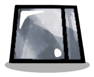 锌 沸点：907°C -> 气态锌属性： 光源, 精炼金属, 金属矿石 |
比热容： 0.129 (DTU/g)/ ºC 热导率： 7.000 (DTU/(m*s))/ ºC 辐射吸收因数：0.3 辐射释放量/1000 千克： 0 拉德/周期 |
玻璃纤维¶
玻璃纤维是一种热固性聚合物基体，由硼硅酸盐（即玻璃）和塑料通过层压工艺制成。尽管这种纤维在抗压方面表现较弱，但这种复合材料具有良好的绝缘性能，并且由于其相对的柔韧性，能够广泛应用于多种不同的领域。
| 材料属性 | ||
|---|---|---|
 |
资源种类：人造材料 熔点：1426.85°C ->  熔融玻璃 熔融玻璃硬度：45 属性： 一般建造材料, 可做水管的物质, 固体, 塑料, 矿物原料, 隔热体 |
比热容： 0.400 (DTU/g)/ ºC 热导率： 1.070 (DTU/(m*s))/ ºC 辐射吸收因数：0.01 辐射释放量/1000 千克： 0 拉德/周期 |
硝酸¶
（HNO3）一种由氮、氧和氢三种元素组成的无机酸。以液态形式存在时，它是用于硝化反应（即向有机分子中添加硝基）的主要试剂。
| 材料属性 | ||
|---|---|---|
 |
资源种类：液体 冰点：-42°C 50 % 氮气,50 %  污染冰 污染冰沸点：121°C 50 % 氮气,50 %  蒸汽 蒸汽属性： 混合物 |
比热容： 0.998 (DTU/g)/ ºC 热导率： 0.889 (DTU/(m*s))/ ºC 辐射吸收因数：0.3 辐射释放量/1000 千克： 0 拉德/周期 |
硝酸盐结晶¶
（NH4NO3）含有高浓度硝酸铵的结晶状污垢。
| 材料属性 | ||
|---|---|---|
| 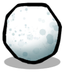 | 资源种类：消耗性矿石 熔点：613°C -> 氨气 硬度：1 属性： 固体 |
比热容： 0.500 (DTU/g)/ ºC 热导率： 3.000 (DTU/(m*s))/ ºC 辐射吸收因数：0.5 辐射释放量/1000 千克： 0 拉德/周期 |
硫酸¶
（H2SO4）一种由硫、氧和氢三种元素组成的无机酸。以液态形式存在时，因其腐蚀性极强而是一种非常危险的化学物质。
| 材料属性 | ||
|---|---|---|
资源种类：液体 冰点：10.31°C 65 %  污染水, 污染水,35 % 硫沸点：337°C -> 气态硫酸属性： 混合物 |
比热容： 0.335 (DTU/g)/ ºC 热导率： 4.221 (DTU/(m*s))/ ºC 辐射吸收因数：0.3 辐射释放量/1000 千克： 0 拉德/周期 |
硼砂¶
硼砂，又称硼酸钠，是一种重要的硼化合物，主要用于制造玻璃纤维，并且在冶金行业中也作为一种助溶剂。
| 材料属性 | ||
|---|---|---|
 |
资源种类：消耗性矿石 熔点：963°C ->  熔融盐 熔融盐硬度：1 属性： 固体 |
比热容： 0.240 (DTU/g)/ ºC 热导率： 0.660 (DTU/(m*s))/ ºC 辐射吸收因数：0.46 辐射释放量/1000 千克： 0 拉德/周期 |
磷青铜¶
由铜、铅和磷组成的合金。在铜基合金中具有显著强韧性，且热导率相对较低。
| 材料属性 | ||
|---|---|---|
资源种类：人造材料 熔点：1049°C 20 % 熔融铅,80 % 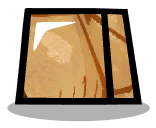 铜 硬度：35 属性： 一般建造材料, 不可粉碎物, 固体, 硬化合金, 精炼金属, 金属矿石 |
比热容： 0.380 (DTU/g)/ ºC 热导率： 20.000 (DTU/(m*s))/ ºC 辐射吸收因数：0.5 辐射释放量/1000 千克： 0 拉德/周期 |
绿片岩¶
一种质地致密、颗粒粗大的变质岩，具有明显的片岩构造特征。该样本的紧密层状结构中含有大量的氯化物矿物。
| 材料属性 | ||
|---|---|---|
 |
资源种类：矿物原料 熔点：1409.85°C 90 % 岩浆,10 %  氯气 氯气硬度：25 属性： 一般建造材料, 可做水管的物质, 固体 |
比热容： 1.000 (DTU/g)/ ºC 热导率： 2.000 (DTU/(m*s))/ ºC 辐射吸收因数：0.53 辐射释放量/1000 千克： 0 拉德/周期 |
辉银矿¶
（Ag2S）辉银矿是一种立方晶系硫化银矿物，导电金属，是精炼银的主要来源。
| 材料属性 | ||
|---|---|---|
 |
资源种类：金属矿石 熔点：963°C 80 % 熔融银,20 % 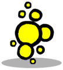 硫蒸气 硬度：25 属性： 一般建造材料, 固体, 抗菌物, 矿石 |
比热容： 0.411 (DTU/g)/ ºC 热导率： 5.600 (DTU/(m*s))/ ºC 辐射吸收因数：0.46 辐射释放量/1000 千克： 0 拉德/周期 |
酸水¶
一种由硫化氢（H2S>）和氨（NH3）组成的水溶液。这种溶液可能自然地从暴露于硫化氢源的含水层中产生，但更常见的是作为工业生产过程中的废水而出现。
| 材料属性 | ||
|---|---|---|
 |
资源种类：液体 冰点：-21°C 50 % 高硫天然气,50 % 污染冰沸点：88°C 50 % 高硫天然气,50 % 污染水属性： 水基物, 混合物 |
比热容： 3.477 (DTU/g)/ ºC 热导率： 0.909 (DTU/(m*s))/ ºC 辐射吸收因数：0.3 辐射释放量/1000 千克： 0 拉德/周期 |
钴铁合金¶
一种由等比例 钴 与 铁 组成的软铁磁合金，以其 高磁饱和强度 著称。
经热处理后，该材料具备 极高的结构稳定性。
| 材料属性 | ||
|---|---|---|
|
资源种类：人造材料 熔点：1427°C 50 %  熔融铁, 熔融铁,50 %  钴 钴硬度：70 属性： 一般建造材料, 不可粉碎物, 固体, 硬化合金, 精炼金属, 金属矿石 |
比热容： 0.420 (DTU/g)/ ºC 热导率： 29.830 (DTU/(m*s))/ ºC 辐射吸收因数：0.67 辐射释放量/1000 千克： 0 拉德/周期 |
银¶
（Ag）银是一种质地柔软、呈白色光泽的过渡金属，具有出色的导电性和导热性。
| 材料属性 | ||
|---|---|---|
资源种类：精炼金属 熔点：961°C -> 熔融银硬度：2 属性： 一般建造材料, 固体, 抗菌物 |
比热容： 0.223 (DTU/g)/ ºC 热导率： 220.000 (DTU/(m*s))/ ºC 辐射吸收因数：0.5 辐射释放量/1000 千克： 0 拉德/周期 |
锌¶
（Zn）锌是一种呈蓝白色光泽，质地稍脆的抗磁性金属。
| 材料属性 | ||
|---|---|---|
资源种类：精炼金属 熔点：420°C -> 熔融锌硬度：2 属性： 一般建造材料, 固体 |
比热容： 0.387 (DTU/g)/ ºC 热导率： 60.000 (DTU/(m*s))/ ºC 辐射吸收因数：0.5 辐射释放量/1000 千克： 0 拉德/周期 |
锌矿¶
((Zn,Cu)5(CO3)2(OH)6) 绿铜锌矿是一种碳酸盐矿物，是精炼锌的主要来源。
| 材料属性 | ||
|---|---|---|
 |
资源种类：金属矿石 熔点：919°C 60 % 熔融锌,40 % 铜 硬度：25 属性： 一般建造材料, 固体, 矿石 |
比热容： 0.411 (DTU/g)/ ºC 热导率： 3.600 (DTU/(m*s))/ ºC 辐射吸收因数：0.46 辐射释放量/1000 千克： 0 拉德/周期 |
陨石矿¶
在早期太阳系中，各种类型的尘埃和微小颗粒相互聚集形成了原始小行星，从而形成了一个密集的石质物质团块。尽管这些碰撞残留物本身是石质的，但它们中仍含有稀有金属的痕迹。
| 材料属性 | ||
|---|---|---|
 |
资源种类：矿物原料 熔点：1410°C -> 岩浆硬度：3 属性： 一般建造材料, 可做水管的物质, 固体, 珍贵岩石 |
比热容： 0.830 (DTU/g)/ ºC 热导率： 2.000 (DTU/(m*s))/ ºC 辐射吸收因数：0.84 辐射释放量/1000 千克： 0 拉德/周期 |
高级金属砂¶
一种闪闪发光的砂质材料，主要由高品质的金属颗粒组成，同时还混有其他更细小的矿物质颗粒。
| 材料属性 | ||
|---|---|---|
|
资源种类：精炼矿物 熔点：2249°C 58 % 气态岩,42 % 熔渣硬度：32 属性： 一般建造材料, 不可粉碎物, 不稳定, 固体, 矿石, 金属砂 |
比热容： 8.660 (DTU/g)/ ºC 热导率： 12.320 (DTU/(m*s))/ ºC 辐射吸收因数：0.46 辐射释放量/1000 千克： 0 拉德/周期 |
黄铜¶
黄铜是由铜和锌组成的合金，因其具有低熔点、高可塑性、耐用性以及良好的导电性和导热性等特性，被广泛用于制造器具。
| 材料属性 | ||
|---|---|---|
| 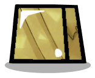 | 资源种类：人造材料 熔点：920°C 70 %  熔融铜, 熔融铜,30 % 气态锌硬度：35 属性： 一般建造材料, 不可粉碎物, 固体, 精炼金属, 金属矿石 |
比热容： 0.380 (DTU/g)/ ºC 热导率： 208.000 (DTU/(m*s))/ ºC 辐射吸收因数：0.7 辐射释放量/1000 千克： 0 拉德/周期 |
重新启用的 元素¶
这些元素已被重新激活或部分调整。
丙烷¶
(C3H8) 丙烷是一种天然烷烃。
当前选中的处于气态。
它可用于生产电力。
| 材料属性 | ||
|---|---|---|
|
资源种类：不可呼吸的气体 凝点：-42.15°C -> 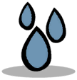 液态丙烷 属性： 可燃气体, 气体 |
比热容： 2.400 (DTU/g)/ ºC 热导率： 0.015 (DTU/(m*s))/ ºC 辐射吸收因数：0.07 辐射释放量/1000 千克： 0 拉德/周期 |
合成气¶
合成气是一种不可呼吸的人造气体。
它可以转化为高效燃料。
| 材料属性 | ||
|---|---|---|
 |
资源种类：不可呼吸的气体 凝点：-252.15°C ->  熔融合成气 熔融合成气属性： 可燃气体, 气体 |
比热容： 2.400 (DTU/g)/ ºC 热导率： 0.168 (DTU/(m*s))/ ºC 辐射吸收因数：0.07 辐射释放量/1000 千克： 0 拉德/周期 |
固态丙烷¶
(C3H8) 固态丙烷是一种固态的天然气。
| 材料属性 | ||
|---|---|---|
 |
资源种类：可液化物 熔点：-188.15°C -> 液态丙烷 硬度：10 属性： 一般建造材料, 固体 |
比热容： 2.400 (DTU/g)/ ºC 热导率： 1.000 (DTU/(m*s))/ ºC 辐射吸收因数：0.75 辐射释放量/1000 千克： 0 拉德/周期 |
液态丙烷¶
(C3H8) 丙烷是一种烷烃。
当前选中的处于液态。
它可用于生产电力。
| 材料属性 | ||
|---|---|---|
资源种类：液体 冰点：-188.15°C -> 固态丙烷沸点：-42.15°C -> 丙烷 |
比热容： 2.400 (DTU/g)/ ºC 热导率： 0.100 (DTU/(m*s))/ ºC 辐射吸收因数：0.75 辐射释放量/1000 千克： 0 拉德/周期 |
碎岩¶
碎石是一种由火成岩粉碎成的机械性混合物。
| 材料属性 | ||
|---|---|---|
 |
资源种类：精炼矿物 熔点：1409.85°C -> 岩浆硬度：10 属性： 不稳定, 固体, 消耗性矿石 |
比热容： 0.200 (DTU/g)/ ºC 热导率： 2.000 (DTU/(m*s))/ ºC 辐射吸收因数：0.7 辐射释放量/1000 千克： 0 拉德/周期 |
磷酸盐结晶¶
(PO3-4) 沉积岩结晶，含有高浓度磷酸盐。
| 材料属性 | ||
|---|---|---|
 |
资源种类：农业 熔点：426.85°C -> 液态磷 硬度：25 属性： 固体, 消耗性矿石 |
比热容： 0.150 (DTU/g)/ ºC 热导率： 2.000 (DTU/(m*s))/ ºC 辐射吸收因数：0.75 辐射释放量/1000 千克： 0 拉德/周期 |
银金矿¶
银金矿是一种由金和银组成的导电金属合金。
它可用于建造电力系统。
| 材料属性 | ||
|---|---|---|
 |
资源种类：金属矿石 熔点：1022.71°C 40 % 熔融银,60 %  金 金硬度：2 属性： 一般建造材料, 固体, 矿石 |
比热容： 0.150 (DTU/g)/ ºC 热导率： 2.000 (DTU/(m*s))/ ºC 辐射吸收因数：0.35 辐射释放量/1000 千克： 0 拉德/周期 |
动物饮食扩展¶
| 输入: | 只小动物 | 输出: |
|---|---|---|
| 炉渣 |
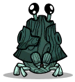 Oakshell | 75% 硝酸盐结晶 |
| 炉渣 |
 Sage Hatch Sage Hatch |
90% 硝酸盐结晶 |
| 碎岩 |
Sage Hatch |
100%  煤炭 煤炭 |
| 绿片岩 |
Sage Hatch |
25%  漂白石 漂白石 |
| 炉渣 |
 Sanishell Sanishell |
75% 硝酸盐结晶 |
| 辉银矿 |
Smooth Hatch | 75% 银 |
| 锌矿 |
Smooth Hatch | 75% 锌 |
 盐 盐 |
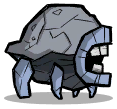 Stone Hatch | 25% 硼砂 |
| 辉银矿 |
Stone Hatch | 25% 煤炭 |
| 锌矿 |
Stone Hatch | 25% 煤炭 |
| 炉渣 |
抛壳蟹 | 75% 硝酸盐结晶 |